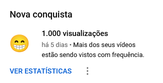
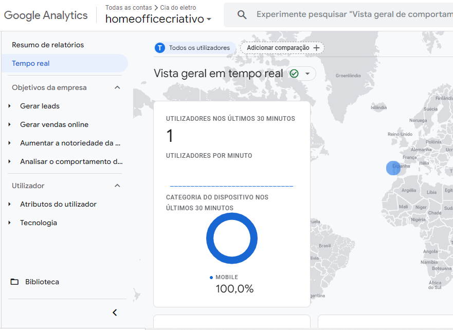

08/01/21
Hoje foi o retorno ao trabalho
Foram uns 80 metros de lixa
Em casa, perdi 1 hora vendo uma forma de estudar e transmitir ao vivo no youtube, mas não deu
uma prq o youtube não deixou fazer pelo celular devido as políticas
ai veio a tentativa de usar o OBS e celular, deu boa, mas a transmissão não rolou
depois veio a dúvida do conteúdo, porque não posso mostrar o material da faculdade.
E falando em faculdade, hoje foi disponibilizado o material do semestre, então já me ataquei na
Gestão Avançada de Projetos, aproveita e veja o resumo que fiz AQUI
e para finalizar, fiz um resumo do material que estudei hoje, mas foi bem resumo mesmo porque tem muitas
informações superficiais e que merecem uma pesquisa a parte.
criei a página e joguei o html básico e assim encerrado o dia.
temais kkkk, comecei o desafio do Instagran para 7 stores um por dia durante 7 dias eeee
e atingi 1 mil visualizações no canal do youtube

Meu Canal no Youtube
07/01/24
Acabou minhas pequenas férias
Depois de 2 semanas em casa, descansando o corpo fisicamente e olha que estava precisando, pois a rotina era escritório
agora passou a ser correria total kkkk
tive um bom tempo para começar meu planejamento 24
pensar no projeto
estudar um pouco, organizar o material da faculdade que começa dia 29/01
e dar uns passeios por Portugal para conhecer um pouquinho mais.
Paáginas atualizadas em 07/01/24
FrontEnd04/01/24
É... hoje foi um dia intenso, horas e horas para lidar com as dvis kkk, mas depois de algumas pesquisas e vídeos no Youtube
conseguir alinhar os botões e deixar a página index já no jeito para mobile.
Ainda falta muita coisa, mas com o passar do tempo e aprendizado, vou deixar top.
Agora vou pesquisar sobre o position para deixar os icones das redes sociais fixas e o botão do whats.
Link do vídeo 7 Horas de CSS Aprendi muito aqui!
03/01/24
Oh coisa boa... Google Analytics configurado, agora é estudar para conhecer essa ferramenta melhor.
Incrível... você começa a fazer uma coisa e aparece aquela ideia, bom, me surgiu a necessidade de gravar a tela do computador, pois ao utilizar o chatgpt para ele me criar uma breve descrição sobre o curso de engenharia da computação, me veio a ideia de gravar a tela do computador, bora lá ver como vou fazer isso.
e vamos nos de novo....
assistindo um vídeo sobre a gravação de tela, me veio a ideia de compartilhar os softwares que estou utilizando, então, bora colocar nas tarefas!
Voltar